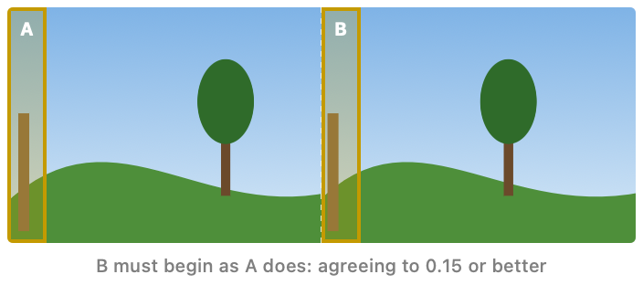
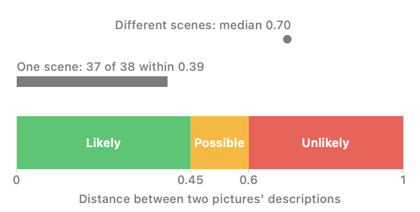

Stereo Dandifier · Help contents
How Find Pairs, on the Match Images loader, decides which single pictures belong together. It makes only the pairs it is certain of: whatever it doubts, it leaves single, for the operator to pair by hand.
It works in two passes. Wide frames that hold both eyes are split first, since such a frame needs no partner; the remaining pictures are then paired with their neighbours.
A frame at least 1.9 times as wide as it is tall may hold both eyes side by side — two square pictures make a frame twice as wide, two 4:3 pictures 2.67 times. Such a frame says so nowhere when an edited export has lost its metadata, or when it is a scan of a card. It is recognised by its picture beginning again just after its centre.

The two strips are compared by their edges rather than their colours, so a difference of exposure between the eyes does not count, and with a little slack either way, since the eyes saw the scene from a little apart. They must agree to 0.15 or better, on a scale from about 0, for strips of different scenes, to 1, for strips alike. The frame's measure is shown upon it. A frame that passes is divided down its centre, the left half serving as the left eye.
It will be found that a frame of a repeating pattern, a long brick front for instance, may pass when it should not; such a pair may be undone with Unpair.
The pictures that remain are compared only with their neighbours: pictures from the same camera taken within a minute of each other, in the order of their taking. A stereo pair taken with one camera, stepped sideways between exposures, is taken moments apart.
Each two neighbours are compared by what they show — the distance between Vision's descriptions of the two pictures, small for pictures of one scene — and that distance is read in three bands:

Two neighbours are made a pair only when they are likely one scene, each is the other's only likely partner, and the ground beneath them shows for which of the two the camera stood further to the left, that being the left eye. A possible likeness, two likely partners, or a direction the ground does not show, leaves the pictures single.
Undated pictures have no neighbours, and must be paired by hand.
Every pair it makes is listed in place of its pictures, and may be swapped or undone like any other. A pair made, swapped or undone is new to the whole workflow: whatever was measured or set for it at later nodes is forgotten.